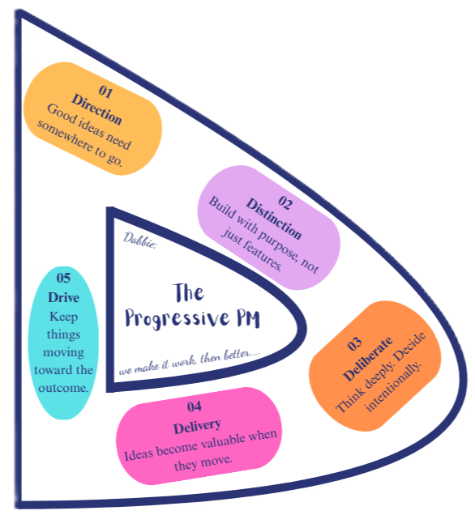
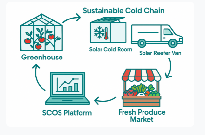
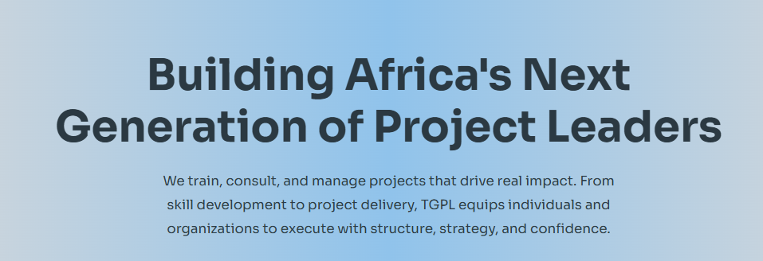
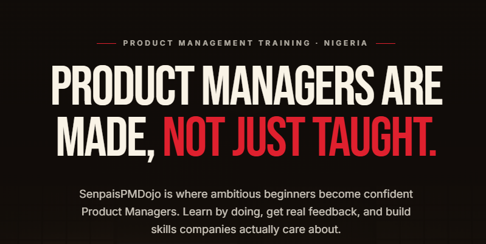
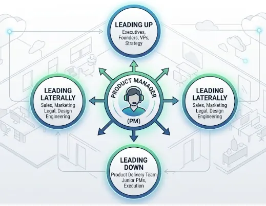
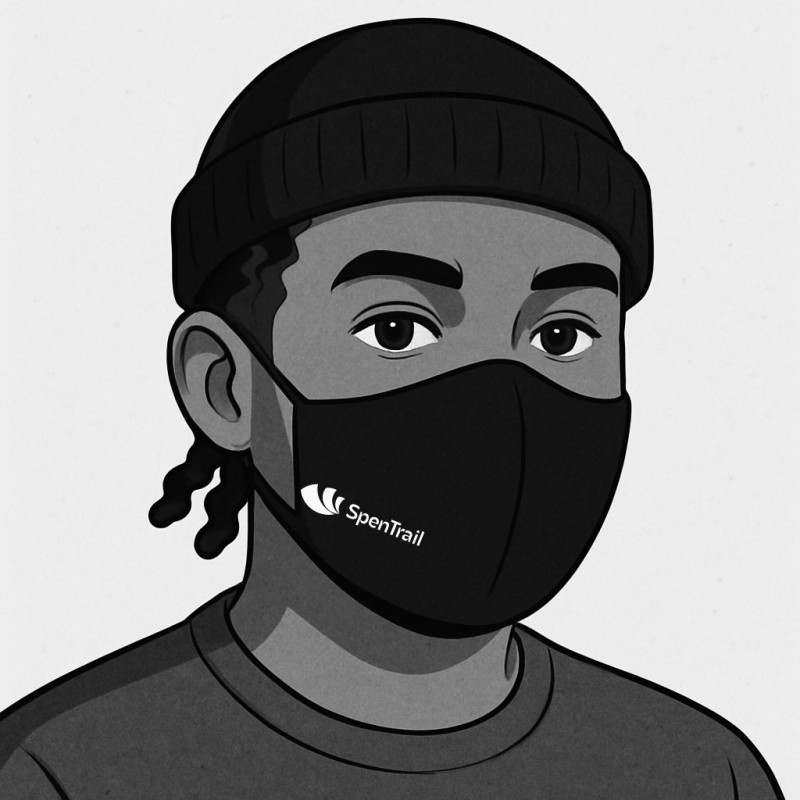

Leading Up, Down, and Laterally;
The Reality of a Product Manager
Read more →I bring the clarity that empowers founders, product teams, developers, and creatives to turn ideas into focused, meaningful outcomes. Leading products and projects from ideation through execution, ensuring alignment, progress, and delivery.

The five principles explained in this image are my personal guide to how I show up in everything I do.
Working as a PM across teams and products has taught me that good work starts with asking the right questions: What problem actually matters? What does a real win look like? And what will it take to move a team toward it together?
I have shaped ideas from a blank page and picked up products already in motion, and either way, the instinct is to understand what's real before deciding what to build.
Outside of work, I explore philosophy, new places, new foods, new ideas, new activities, and new people. I'm also deeply committed to community and mentorship, helping others grow as I continue to grow myself.
Excellence is never an accident. It is always the result of high intention, sincere effort, and intelligent execution. Aristotle

Product Manager & Internal Operations Manager
Built and launched a communications MVP after identifying and prioritizing core user needs.

Product Manager
Refined a launched financial product through customer feedback, testing, product iteration, and growth-focused improvements.

Product Manager
Shaped an enterprise product from ideation through discovery, MVP definition, strategy, implementation, and launch.

Product Manager
Led the product from ideation through development, shaping a care companion designed to help users follow through on important health actions.

Project Manager / Sustainable Project Engineer
A real-world infrastructure project centered on planning, coordination, implementation, and stakeholder management.
Project Coordinator / Instructor
A training initiative involving planning, logistics, participant coordination, scheduling, and delivery.

Project Manager / Leader
Education-program projects demonstrating planning, team coordination, delivery, and execution in a learning environment.

Project Manager / Internal Operations Manager
Cohort-based education work involving program delivery, team coordination, and internal operations.

A reflection on understanding what is actually happening before making product decisions.
Read more →Working with Daberechi on SpenTrail was one of the highlights of building this product. She didn't wait to be told what to do; she jumped in, talked to users, gathered feedback, and came back with insights that actually shaped how we thought about the product. What impressed me most wasn't just the output, but the instinct. She identified problems before they were flagged and moved on them without being asked. Daberechi is the kind of PM that early-stage teams dream about, and I'd work with her again without hesitation.

CEO, · SpenTrail
I had the pleasure of working with Daberechi during her time as a Product Management Intern, and she consistently stood out for her intentionality, strong work ethic, and willingness to go above and beyond. She approached every task with thoughtfulness and genuine curiosity, always seeking to understand not just what needed to be done, but why it mattered. Daberechi was proactive, dependable, and never hesitated to put in the extra effort to ensure work was completed to a high standard. She welcomed feedback, adapted quickly, and showed the kind of ownership and initiative that is rare at such an early stage in a career. Daberechi would be a valuable addition to any team, and I’m confident she has a bright future ahead in product management.
Founder · Senpai PM Dojo